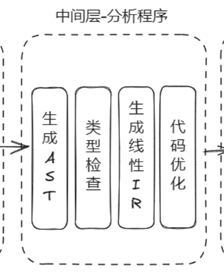

a bite of AST&SDD
AST有什么用？

AST是沟通语法和语义的桥梁。基于AST，我们可以进行类型检查，进一步进行各种分析等等。
从之前的Parse Tree过渡到AST，我们可以看到发生了如下变化：


可以看到，AST精简了很多，信息也得到了提取。具体而言，它完成了这样几个改进，从而消除了推导过程中的一些步骤和节点：
- 单一展开形式塌陷，比如factor→value→num→unum
- 括号等冗余信息被去掉了
- 运算符和关键字不再被作为叶子结点，比如binOp”+”。
现在，抽象语法树可以被编译器后续编辑干很多事了。
请注意，尽管AST看起来是一棵树，但是它是中间层的一部分，而不是单纯地停留在语法层面，也即它并不是优化的/高级版本的parse tree。
了解了这些，现在可以开始考虑AST的构造方法了。
SDD：语法制导定义
可以使用**语法制导定义（SDD，Syntax Directed Definition）**的方法构造AST，故在此先对语法制导定义做出解释。
语法制导定义能做什么？
在语义层面，一个拥有合法语义的程序应当满足：类型正确；变量先声明再使用……等等。而这些信息往往是上下文相关的，所以无法从单纯的语法分析中推断得出。
语法制导定义使用语法引导语义的分析；对于程序的语法结构，根据其CFG文法结构赋予其语义。
如何定义“语法制导定义”？
语法制导定义将属性和规则与上下文无关文法相结合：属性与文法符号相关联，规则和产生式相关联。
考虑“主谓宾”这样一个结构——在日语里可能是“主宾谓”，那么要转写过来，首先需要在句子中进行分词，<名><动><名>，得到一系列文法符号，这是词法分析的部分；然后句法分析，我们确实拥有<名><动><名>这样的产生式，说明这句话是合法的。接下来就是转换，将这句话变成<名><名><动>，这就是使用了语义规则得到的输出。（我知道这个例子一点也不严谨，语言学专业的小伙伴不要打我。）在这个实例中我们应用语法制导定义进行了翻译；下面的中缀到前缀翻译亦是如此。

再考虑另外一个例子：“我吃饭”是语义上合法的，“饭吃我”不是。可以想象，两句话都是语法上合法的，但是给“我”和“饭”赋予类型属性，则有我的属性是人（属性值），饭的属性是食物，从这里可以发现类型检查出现了问题，这是语法制导定义在类型检查上的应用。
语义规则还能够对属性的值进行计算，比如下面的台式计算器，语义规则说明了val的值在不同操作下应如何变化。

最后就是语法制导定义在构造AST上面的应用，这个稍后再谈。
语法制导定义的形式？
在说明语法制导定义的形式之前，需要先定义综合属性和继承属性：
综合属性（Synthesized Attribute）：自底向上
- 结点N的属性值由N的产生式所关联的语义规则来定义
- 通过N的子结点或N本身的属性值来定义
考虑1+2。
继承属性（Inherited Attribute）：自顶向下
- 结点N的属性值由N的父结点所关联的语义规则来定义
- 依赖于N的父结点、N本身和N的兄弟结点上的属性值
考虑this。
有了这两个概念，可以将语法制导定义分为两类：
- S属性的SDD（S-Attributed SDD），其中S表示Synthesized。只包含综合属性。
- L属性的SDD（L-Attributed SDD），其中L表示Left-to-right。允许继承属性的出现。
也就是说L-Attributed SDD是S-Attributed SDD的超集。可以想见，LL(1)的属性文法是属于L-Attributed SDD的，因为它使用了一位Look-Ahead。
怎么使用语法制导定义实现AST的构造？
由于目前课程要求并不把这块作为重点，本节仅简单介绍大致逻辑，详细介绍可翻阅龙书5.2节。
AST的构造类同于中缀表达式转前缀表达式。我们通过为每个运算符和运算对象建立节点来为子表达式构造子树。
虽说我们可以基于parse tree来构造AST，但更多时候其实可以跳过这一步。考虑一个简单算式，采用以下规则（S-attributed SDD）就可以直接构造出AST了：

其中mknode和mkleaf采取如下定义：
- mknode(op, left, right)建立一个标记为op的运算符节点，left和right分别指向左右运算对象。
- mkleaf(id, entry)建立标记为id的标识符节点，entry指向该标识符在符号表中的相应表项的指针。
- mkleaf(num, val)建立标记为num的数字节点，val保存该数的值。
然后，采用自底向上的方法就可以构造出表达式的AST。结果如图：

以上就是文章的内容啦。
References
nju编译原理ppt lyttyyds（咦这课不是tt老师上的吗（（
老师的ppt
龙书